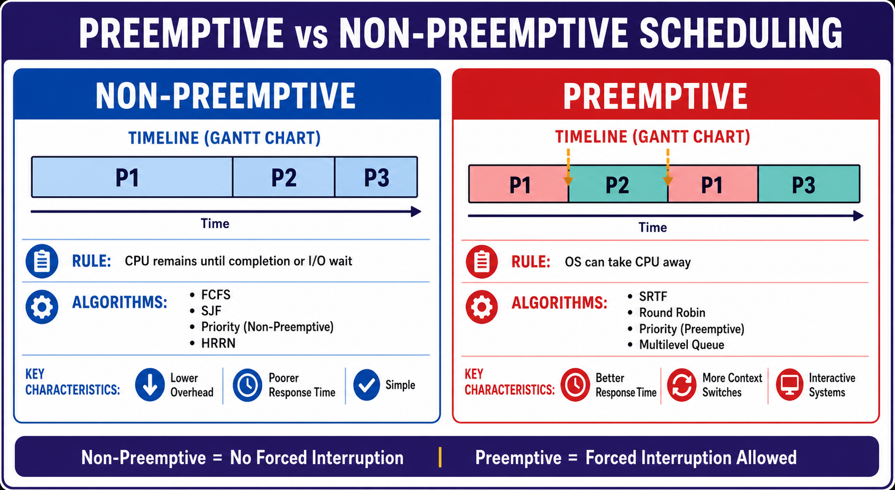

Preemptive and Non-Preemptive Scheduling
Rules, algorithms, Gantt timelines, advantages, disadvantages, and exam-focused comparison.

Rules, algorithms, Gantt timelines, advantages, disadvantages, and exam-focused comparison.
